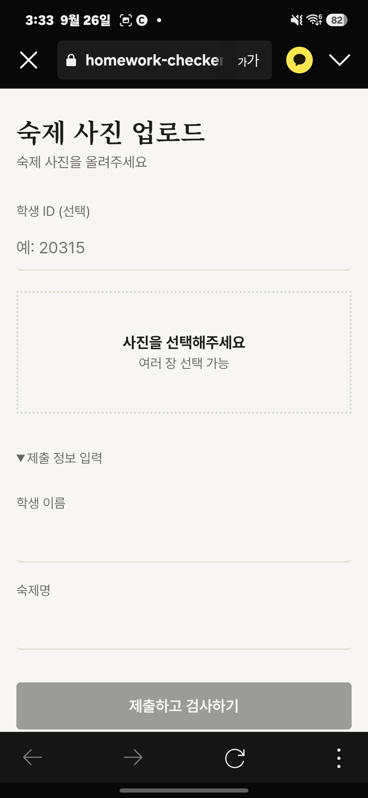
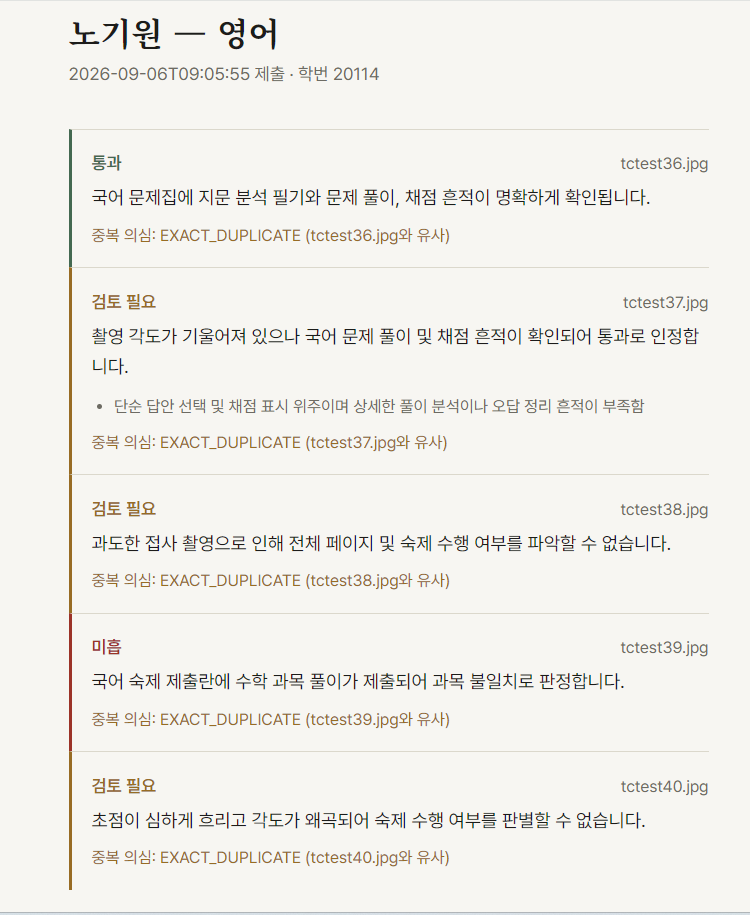
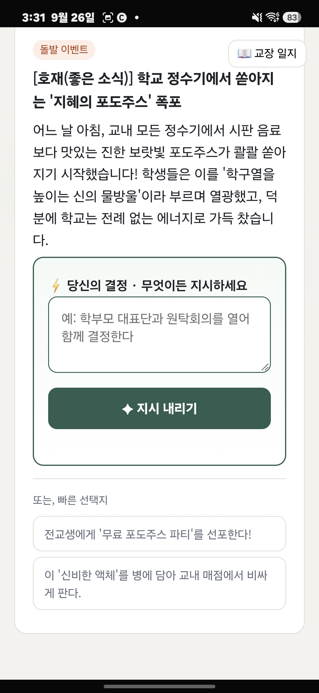
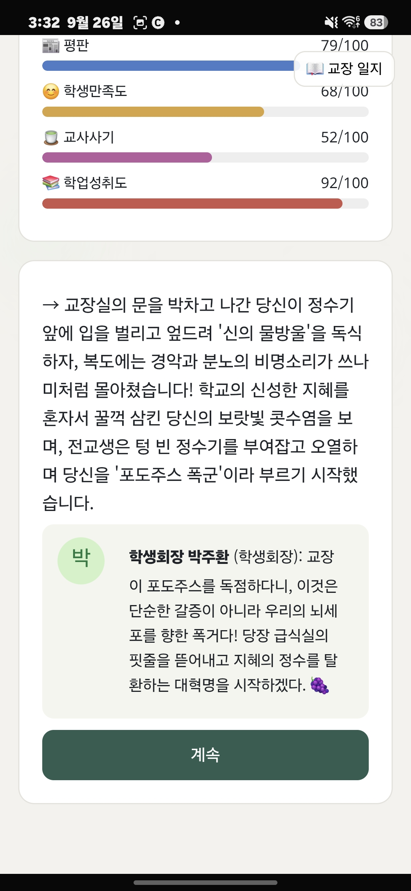

간단한 Python 게임에서 시작해 AI API를 활용한 게임을 만들고, 실제 학교에서 발생하는 문제를 해결하기 위한 웹 서비스까지 개발했습니다. 제가 중요하게 생각하는 것은 기술 자체보다 실제로 작동하는 결과를 만드는 것입니다.
제가 만든 프로젝트 중 개발 과정과 문제 해결 경험을 가장 잘 보여주는 두 프로젝트입니다.
수업에서 반복되는 숙제검사에 너무 많은 시간이 사용되는 문제를 발견하고, 교사가 제출물을 확인하는 과정을 줄이기 위해 만든 웹 서비스입니다. 실제 교사가 사용해 보면서 기능과 배포 과정을 계속 수정했습니다.
실제 교사 사용 과정에서 확인한 결과입니다. 약 5회의 실제 사용에 기반한 관찰이며 반복적인 통제 실험 결과는 아닙니다.
수업에서 숙제검사에 상당한 시간이 들어가고 있었습니다. 검사에 걸리는 시간이 길어질수록 본래 수업에 사용할 시간이 줄어들기 때문에, 반복적인 확인 작업을 줄일 필요가 있다고 판단했습니다.
단순히 AI에게 숙제를 평가하도록 하는 것이 아니라, 교사가 반복적으로 확인해야 하는 정보를 먼저 정리하고 필요한 부분을 빠르게 확인할 수 있도록 만드는 것을 목표로 했습니다.
학생 제출물 업로드, 제출 정보 분석, AI 기반 숙제 확인, 제출 상태 확인, 유사한 사진이나 중복 가능성이 있는 제출물 확인 등의 기능을 구현했습니다.
AI가 교사의 판단을 대신하는 것이 아니라, 교사가 반복적으로 확인해야 하는 작업을 줄이고 확인이 필요한 정보를 빠르게 보여주는 방향으로 설계했습니다.


개발 환경에서는 정상적으로 작동하던 서비스가 실제 배포 환경인 Render에서는 여러 단계에서 오류가 발생했습니다. 단순히 코드를 계속 수정하는 대신 프로젝트 실행 과정의 각 단계에 로그를 추가해 어디에서 실패하는지 추적했습니다. 그 결과 Gemini API 호출 과정에서 발생한 timeout 문제를 특정했고, 해당 문제를 수정해 실제 배포 환경에서도 서비스를 실행할 수 있도록 개선했습니다.
내가 우리 학교의 교장이 된다면?
제가 처음으로 만든 AI 프로젝트입니다. 정보 수업에서 Google Colab으로 간단한 Python 게임을 만들던 경험에서 출발해 게임의 규모를 확장했고, Gemini API를 실제 게임의 판단 시스템에 연결했습니다. 플레이어가 직접 학교의 교장이 되어 여러 상황에 대응하는 채팅형 시뮬레이션 게임입니다.


만들면서 배우고,
실제 문제에 적용하면서
다음 것을 배웁니다.
처음에는 Python으로 간단한 게임을 만드는 것에서 시작했습니다.
이후 Gemini API를 활용한 게임을 만들면서 외부 AI를 프로그램 안에서
실제 기능으로 사용하는 방법을 익혔고,
그 경험을 바탕으로 학교에서 직접 발견한 문제를 해결하는
숙제검사기를 개발했습니다.
프로젝트를 만들면서 가장 많이 배운 것은
코드를 작성하는 것뿐만 아니라,
오류의 원인을 추적하고 실제 사용 환경에서 작동하도록
끝까지 수정하는 과정이었습니다.